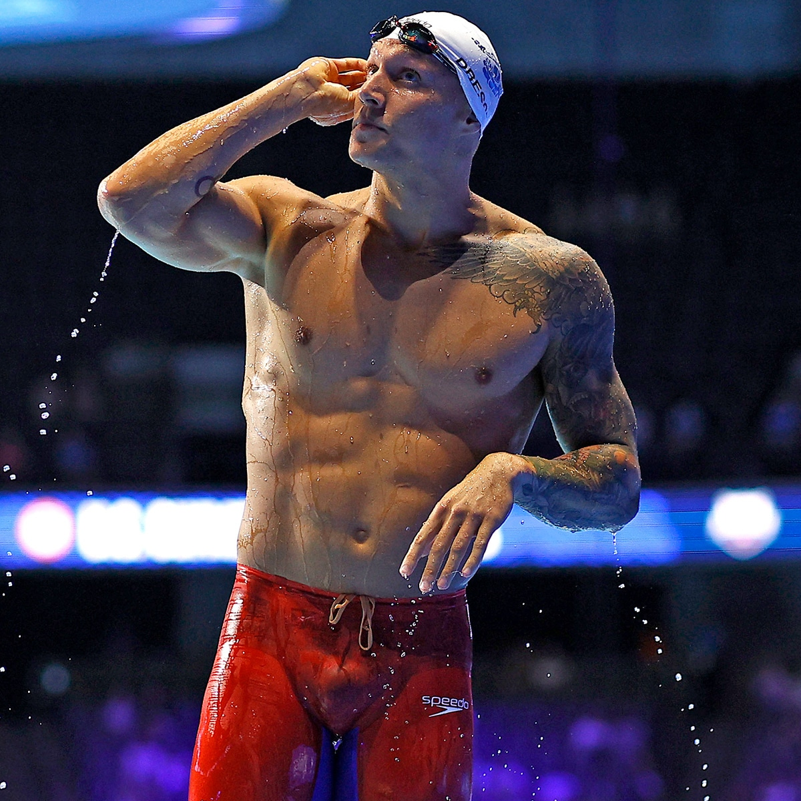

Caeleb Remel Dressel é um nadador profissional natural de Green Cove Springs, na Florida, Estados Unidos.
Nascido a 16 de agosto de 1996, este compete desde 2016 pela seleção americana de natação e desde 2019 pelo Cali Condors, clube profissional de natação de San Francisco, na California.
Caeleb é conhecido como um dos melhores nadadores do mundo. Medalhista olímpico com apenas 19 anos, aos 23 já tinha conseguido mais de 10 medalhas de ouro no Mundial de Natação, consquistadas em apenas duas edições.
O norte-americano é dono de mais de 10 recordes mundiais entre piscinas curtas e normais e outros 15 recordes nacionais.
O maior destaque deste atleta, foi ter ultrapassado o recorde de Michael Phelps nos 100 M Mariposa, completando a prova em apenas 49.50s.
Caeleb Dressel é principalmente um nadador de velocidade, mas muito versátil. Posto isto, podemos concluir que este costuma competir em provas de velocidade (50m e 100m) nos nados livre e Mariposa.

Em 2013, mesmo tendo conquistado quartro medalhas e uma delas de ouro, o nadador sentiu-se fracassado e afastou-se do desporto por 6 meses.
No seu regresso ás competições, apoiou-se muito na sua família e na religião e veio a mudar o rumo da sua carreira ao comprometer-se com a Universidade da Flórida (a mesma onde o seu pai havia estudado), especializada em provas de média e longa distância.